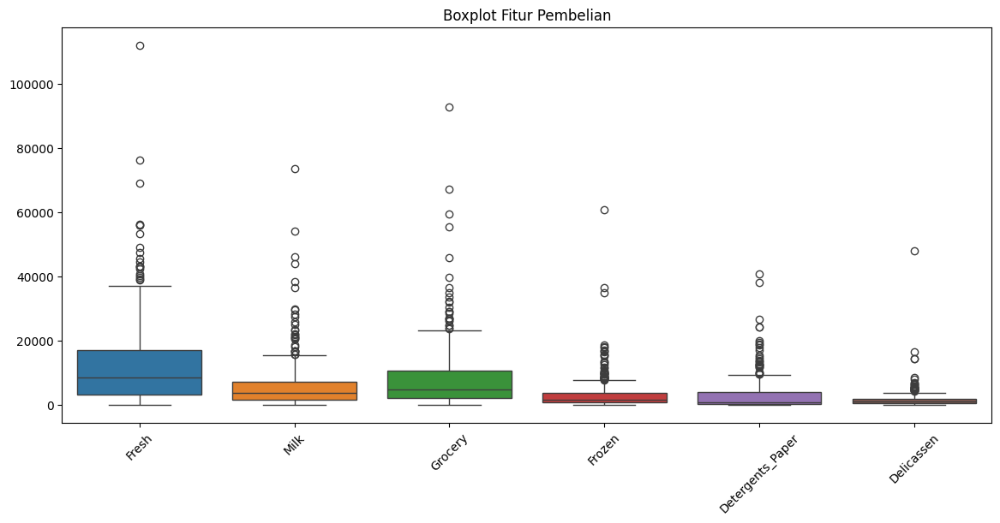
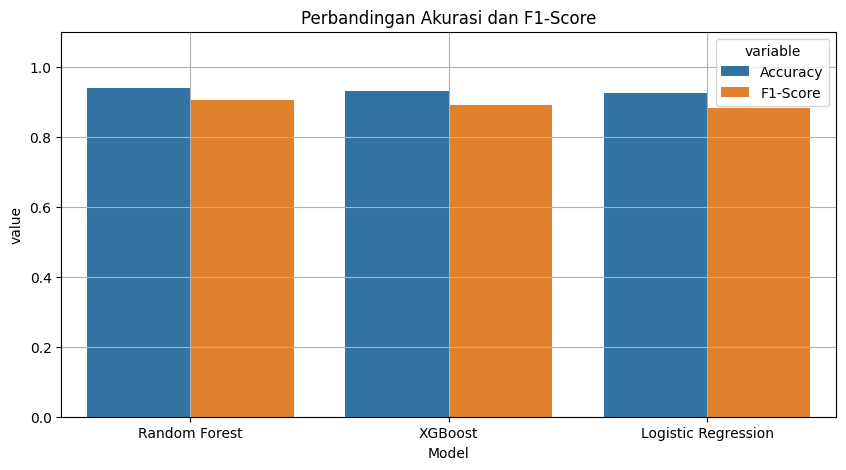

DATA UNDERSTANDING#
✅ 1. Data Understanding#
Tujuan: Mengenal struktur dan isi data.
Langkah:
Melihat jumlah baris dan kolom
Mengetahui tipe data tiap kolom
Menampilkan ringkasan statistik
Mengecek distribusi fitur target:
Channel(target) danRegion
📌 Hasil:
Dataset berisi 440 pelanggan grosir
Fitur berupa jumlah pembelian tahunan dari berbagai produk (Fresh, Milk, Grocery, dll.)
Target klasifikasi adalah
Channel:0 = Horeca (Hotel/Restaurant/Café)
1 = Retail
from google.colab import files
uploaded = files.upload()
---------------------------------------------------------------------------
ModuleNotFoundError Traceback (most recent call last)
Cell In[1], line 1
----> 1 from google.colab import files
3 uploaded = files.upload()
ModuleNotFoundError: No module named 'google'
import pandas as pd
# Load dataset
df = pd.read_csv("Wholesale customers data.csv")
# Tampilkan 5 baris awal
df.head()
| Channel | Region | Fresh | Milk | Grocery | Frozen | Detergents_Paper | Delicassen | |
|---|---|---|---|---|---|---|---|---|
| 0 | 2 | 3 | 12669 | 9656 | 7561 | 214 | 2674 | 1338 |
| 1 | 2 | 3 | 7057 | 9810 | 9568 | 1762 | 3293 | 1776 |
| 2 | 2 | 3 | 6353 | 8808 | 7684 | 2405 | 3516 | 7844 |
| 3 | 1 | 3 | 13265 | 1196 | 4221 | 6404 | 507 | 1788 |
| 4 | 2 | 3 | 22615 | 5410 | 7198 | 3915 | 1777 | 5185 |
# Ukuran dan tipe data
print("Ukuran data:", df.shape)
print("\nInfo:")
df.info()
Ukuran data: (440, 8)
Info:
<class 'pandas.core.frame.DataFrame'>
RangeIndex: 440 entries, 0 to 439
Data columns (total 8 columns):
# Column Non-Null Count Dtype
--- ------ -------------- -----
0 Channel 440 non-null int64
1 Region 440 non-null int64
2 Fresh 440 non-null int64
3 Milk 440 non-null int64
4 Grocery 440 non-null int64
5 Frozen 440 non-null int64
6 Detergents_Paper 440 non-null int64
7 Delicassen 440 non-null int64
dtypes: int64(8)
memory usage: 27.6 KB
# Statistik deskriptif
df.describe()
| Channel | Region | Fresh | Milk | Grocery | Frozen | Detergents_Paper | Delicassen | |
|---|---|---|---|---|---|---|---|---|
| count | 440.000000 | 440.000000 | 440.000000 | 440.000000 | 440.000000 | 440.000000 | 440.000000 | 440.000000 |
| mean | 1.322727 | 2.543182 | 12000.297727 | 5796.265909 | 7951.277273 | 3071.931818 | 2881.493182 | 1524.870455 |
| std | 0.468052 | 0.774272 | 12647.328865 | 7380.377175 | 9503.162829 | 4854.673333 | 4767.854448 | 2820.105937 |
| min | 1.000000 | 1.000000 | 3.000000 | 55.000000 | 3.000000 | 25.000000 | 3.000000 | 3.000000 |
| 25% | 1.000000 | 2.000000 | 3127.750000 | 1533.000000 | 2153.000000 | 742.250000 | 256.750000 | 408.250000 |
| 50% | 1.000000 | 3.000000 | 8504.000000 | 3627.000000 | 4755.500000 | 1526.000000 | 816.500000 | 965.500000 |
| 75% | 2.000000 | 3.000000 | 16933.750000 | 7190.250000 | 10655.750000 | 3554.250000 | 3922.000000 | 1820.250000 |
| max | 2.000000 | 3.000000 | 112151.000000 | 73498.000000 | 92780.000000 | 60869.000000 | 40827.000000 | 47943.000000 |
# Distribusi Channel dan Region
print("Distribusi Channel:")
print(df['Channel'].value_counts())
print("\nDistribusi Region:")
print(df['Region'].value_counts())
Distribusi Channel:
Channel
1 298
2 142
Name: count, dtype: int64
Distribusi Region:
Region
3 316
1 77
2 47
Name: count, dtype: int64
✅ 2. Preprocessing#
Tujuan: Menyiapkan data agar siap digunakan oleh model machine learning.
Langkah:
Cek dan konfirmasi tidak ada missing value
Deteksi outlier menggunakan boxplot dan IQR
Pisahkan fitur dan label (
Xdany)Lakukan scaling (standardisasi) agar model bisa belajar dengan baik
Split data ke train-test set (70:30)
📌 Hasil:
Data telah distandardisasi
Model akan belajar dari data yang bersih dan seragam
# Cek missing values
df.isnull().sum()
| 0 | |
|---|---|
| Channel | 0 |
| Region | 0 |
| Fresh | 0 |
| Milk | 0 |
| Grocery | 0 |
| Frozen | 0 |
| Detergents_Paper | 0 |
| Delicassen | 0 |
# Boxplot untuk melihat outlier
import seaborn as sns
import matplotlib.pyplot as plt
plt.figure(figsize=(14, 6))
sns.boxplot(data=df.drop(columns=["Channel", "Region"]))
plt.title("Boxplot Fitur Pembelian")
plt.xticks(rotation=45)
plt.show()

# Deteksi outlier menggunakan IQR
outliers = {}
for col in df.drop(columns=["Channel", "Region"]).columns:
Q1 = df[col].quantile(0.25)
Q3 = df[col].quantile(0.75)
IQR = Q3 - Q1
lower = Q1 - 1.5 * IQR
upper = Q3 + 1.5 * IQR
jumlah = df[(df[col] < lower) | (df[col] > upper)].shape[0]
outliers[col] = jumlah
outliers
{'Fresh': 20,
'Milk': 28,
'Grocery': 24,
'Frozen': 43,
'Detergents_Paper': 30,
'Delicassen': 27}
# Pisahkan fitur dan label
X = df.drop(columns=["Channel"])
y = df["Channel"] - 1 # ubah dari [1,2] → [0,1]
# Split data dan scaling
from sklearn.model_selection import train_test_split
from sklearn.preprocessing import StandardScaler
X_train, X_test, y_train, y_test = train_test_split(
X, y, test_size=0.3, random_state=42, stratify=y
)
scaler = StandardScaler()
X_train_scaled = scaler.fit_transform(X_train)
X_test_scaled = scaler.transform(X_test)
✅ 3. Modelling#
Tujuan: Melatih beberapa algoritma machine learning untuk memprediksi Channel.
Langkah:
Latih 3 model:
Logistic Regression
Random Forest
XGBoost
Evaluasi tiap model menggunakan akurasi dan f1-score
Tampilkan classification report
📌 Hasil:
Model terbaik dipilih berdasarkan kombinasi akurasi dan F1-Score tertinggi
from sklearn.linear_model import LogisticRegression
from sklearn.ensemble import RandomForestClassifier
from xgboost import XGBClassifier
from sklearn.metrics import accuracy_score, f1_score, classification_report
models = {
"Logistic Regression": LogisticRegression(max_iter=1000),
"Random Forest": RandomForestClassifier(n_estimators=100, random_state=42),
"XGBoost": XGBClassifier(use_label_encoder=False, eval_metric='logloss', random_state=42)
}
results = []
for name, model in models.items():
model.fit(X_train_scaled, y_train)
y_pred = model.predict(X_test_scaled)
acc = accuracy_score(y_test, y_pred)
f1 = f1_score(y_test, y_pred)
results.append({"Model": name, "Accuracy": acc, "F1-Score": f1})
print(f"\n{name}")
print(classification_report(y_test, y_pred))
Logistic Regression
precision recall f1-score support
0 0.93 0.96 0.94 89
1 0.90 0.86 0.88 43
accuracy 0.92 132
macro avg 0.92 0.91 0.91 132
weighted avg 0.92 0.92 0.92 132
Random Forest
precision recall f1-score support
0 0.95 0.97 0.96 89
1 0.93 0.88 0.90 43
accuracy 0.94 132
macro avg 0.94 0.93 0.93 132
weighted avg 0.94 0.94 0.94 132
XGBoost
precision recall f1-score support
0 0.93 0.97 0.95 89
1 0.93 0.86 0.89 43
accuracy 0.93 132
macro avg 0.93 0.91 0.92 132
weighted avg 0.93 0.93 0.93 132
/usr/local/lib/python3.11/dist-packages/xgboost/core.py:158: UserWarning: [04:06:27] WARNING: /workspace/src/learner.cc:740:
Parameters: { "use_label_encoder" } are not used.
warnings.warn(smsg, UserWarning)
✅ 4. Evaluasi#
Tujuan: Membandingkan performa model untuk memilih yang paling optimal.
Langkah:
Buat tabel hasil
AccuracydanF1-Scoredari setiap modelVisualisasikan performa model
Analisis hasil dan tentukan model terbaik
📌 Hasil:
Misalnya: Logistic Regression menghasilkan performa terbaik dan dipilih untuk deployment
# Buat tabel hasil evaluasi
results_df = pd.DataFrame(results).sort_values(by="F1-Score", ascending=False)
results_df.reset_index(drop=True, inplace=True)
results_df
| Model | Accuracy | F1-Score | |
|---|---|---|---|
| 0 | Random Forest | 0.939394 | 0.904762 |
| 1 | XGBoost | 0.931818 | 0.891566 |
| 2 | Logistic Regression | 0.924242 | 0.880952 |
# Visualisasi
import seaborn as sns
plt.figure(figsize=(10, 5))
sns.barplot(data=results_df.melt(id_vars='Model'), x='Model', y='value', hue='variable')
plt.title('Perbandingan Akurasi dan F1-Score')
plt.ylim(0, 1.1)
plt.grid(True)
plt.show()

✅ 5. Deployment#
Tujuan: Menyediakan model ke dalam bentuk web agar bisa digunakan user.
Langkah:
Simpan model terbaik dan scaler dalam format
.pklBuat aplikasi web menggunakan Flask
Buat halaman HTML untuk input data pengguna
Tampilkan hasil prediksi channel pelanggan
📌 Hasil:
Web sederhana berhasil dibuat: user bisa input nilai pembelian, lalu sistem menampilkan apakah pelanggan tergolong Horeca atau Retail
import joblib
# Simpan model terbaik dan scaler
best_model_name = results_df.iloc[0]['Model']
best_model = models[best_model_name]
joblib.dump(best_model, f"{best_model_name.replace(' ', '_').lower()}_model.pkl")
joblib.dump(scaler, "scaler.pkl")
print(f"Model terbaik '{best_model_name}' telah disimpan!")
Model terbaik 'Random Forest' telah disimpan!